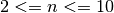

Smallest multiple¶
Problem 5
2520 is the smallest number that can be divided by each of the numbers from 1 to 10 without any remainder.
What is the smallest number that is evenly divisible by all of the numbers from 1 to 20?
Solution
import math
Compute the prime factors of a number. This has an upper bound based on Python’s stack limit.
-
euler05.primeFactors(x)¶ -
Extract the prime factors. Parameters: x – A number Returns: list of prime factors
def primeFactors( x ):
"""Return a list of prime factors of x
>>> from euler05 import primeFactors
>>> primeFactors(2)
[2]
>>> primeFactors(10)
[2, 5]
>>> primeFactors(2520)
[2, 2, 2, 3, 3, 5, 7]
"""
for i in range(2,int(math.sqrt(x))+1):
if x % i == 0:
return [i] + primeFactors( x // i )
return [x]
Compute the product of a list of numbers.
-
euler05.prod(n_iter)¶ -
Product of an iterable. Parameters: n_iter – iterable or sequence of integers.
def prod( n_iter ):
"""Compute product of values in an iterable n_iter.
>>> from euler05 import prod
>>> prod( [2,5] )
10
>>> prod( [2] )
2
>>> prod( [2, 2, 2, 3, 3, 5, 7] )
2520
"""
p= 1
for v in n_iter:
p *= v
return p
When we get the prime factors of numbers, n, , we get these:
- [2]
- [3]
- [2, 2]
- [5]
- [2, 3]
- [7]
- [2, 2, 2]
- [3, 3]
- [2, 5]
We want to get this list [2, 2, 2, 3, 3, 5, 7]
We build this list incrementally. Start with factors from each number is descending order: [2, 5], [3, 3], [2, 2, 2], etc.
We easily get [2, 5, 3, 3] for the first two.
Since we already have a 2, we remove it from [2, 2, 2] and then accumulate the [2, 2] to get [2, 5, 3, 3, 2, 2].
def distinctFactors( n ):
"""Accumulate distinct factors for numbers from 2 to n.
>>> from euler05 import distinctFactors
>>> distinctFactors( 10 )
[2, 5, 3, 3, 2, 2, 7]
>>> sorted( distinctFactors( 10 ) )
[2, 2, 2, 3, 3, 5, 7]
>>> prod( distinctFactors( 10 ) )
2520
"""
theFactors= []
for i in range(n,2,-1):
pf_i= primeFactors(i)
# For each existing prime factor, f, remove it from this number's factors.
for f in theFactors:
if f in pf_i:
pf_i.remove(f)
# Accumulate the remaining prime factors in our list of factors.
theFactors.extend( pf_i )
#print( i, primeFactors(i) )
return theFactors
Test the module components.
def test():
import doctest
doctest.testmod(verbose=0)
Compute the answer.
def answer():
return prod(distinctFactors(20))
Confirm the answer.
def confirm(ans):
assert ans == 232792560, "{0!r} Incorrect".format(ans)
Create some output.
if __name__ == "__main__":
test()
ans= answer()
confirm(ans)
print( "The smallest number that is evenly divisible by all of the numbers from 1 to 20:", ans )